Rolling Stones: su historia y biografía
La historia musical de los Rolling Stones comienza en 1960, cuando Mick Jagger y Keith Richards, dos viejos compañeros de estudios, comienzan a compartir su pasión por la música y el rythm & blues. Al año siguiente crearon un grupo, 'Little Boy Blue & Blue Boys, junto a Jack Taylor.The Rolling Stones La historia de The Rolling Stones comienza en Londres, en 1961,
cuando Mick Jagger y Keith Richards, amigos del colegio, fundan la banda "Little Boy
Blue & Blue Boys" junto a Dick Taylor (éste último se separaría para fundar Pretty Things).
En sus orígenes se dedican a versionear temas de blues y de rithm&blues. Son una desconocida
banda que toca en pequeños locales y en la que los músicos entran y salen con facilidad,
seguramente porque no encajaban con la pareja Jagger-Richards.
En 1962, deciden cambiar el nombre del grupo y eligen uno basado en una canción de Muddy Waters
"Rollin Stones Blues". Aunque la traducción literal del nombre del grupo es piedras rodantes o
cantos rodados, la traducción más ajustada al español sería "Los balas perdidas". A este nuevo
proyecto se unen Brian Jones y Charlie Watts. Poco después Bill Wyman sustituye a Dick Taylor.
ésta es la primera formación sólida de The Rolling Stones. Con el grupo ya organizado, graban
un sencillo "Come on" que es una versión de un tema de Chuck Berry y consiguieron un modesto éxito
que les llevó a su primera gira por clubs ingleses y en la que se dedicaban a interpretar versiones
de temas conocidos, especialmente de cantantes de blues y soul americanos.
La banda de rock inglesa Rolling Stones se forma en el año 1962. Entre sus integrantes se
encuentran Mick Jagger, Keith Richards, Brian Jones, Charly Watts y Bill Wyman. Su formación
ha ido variando a lo largo de su historia. En el siguiente esquema se puede verificar la
formación de la banda en diferentes épocas.
| Instrumento | Integrante | 1962 | 1963-68 | 1969-73 | 1974-85 | 1986-94 | 1994-Actual |
|---|---|---|---|---|---|---|---|
| Voz | Mick Jagger | X | X | X | X | X | X |
| Guitarra | Keith Richards | X | X | X | X | X | X |
| Guitarra | Brian Jones | X | X | ||||
| Guitarra | Mick Taylor | X | |||||
| Guitarra | Ron Wood | X | X | X | |||
| Bajo | Bill Wyman | X | X | X | X | X | |
| Bajo | Darryl Jones | X | |||||
| Bateria | (Varios) | X | |||||
| Bateria | Charlie Watts | X | X | X | X | X | |
| Teclados | Ian Stewart | X | X | X | X |
El nombre del grupo fue tomado del nombra de una canción de Muddy Waters llamado "Rolling Stones
blues". El primer álbum completo aparece en el año 1964 y su nombre era sencillamente "The Rolling
Stones". En su gran mayoría se trataba de canciones de otros grupos y personal ya que solamente
había una sola canción compuesta por ellos en el disco. Su segundo disco "Rolling Stones 2" aparece
al año siguiente.
Fuera del escenario los expertos de marketing querían darles a conocer como los chicos malos del pop/rock,
en contraposición con los Beatles, que podrían ser considerados los chicos buenos.
Así, eran constantes los escándalos en que se veían salpicados. Unas veces eran detenidos por orinar en
público, otras por posesión de drogas y así uno tras otro.
Por aquel entonces comenzaron a plantearse que, si querían mantenerse en la cima en el mundo de la música
tendrían que aportar su granito de arena y demostrar su capacidad creativa. Por ello, su manager les encerró
varios días en un hotel para que trabajaran en la elaboración de temas nuevos e inéditos. De allí salieron
algunos de sus mayores éxitos. A pesar de ello, su nuevo álbum 'Out Of Our Heads', seguía manteniendo un
buen número de versiones, reservándose los nuevos temas para discos posteriores.
Luego de tener sus primeros dos albumen en la calle, el grupo comenzó a alcanzar fama mundial y a batir cada vez nuevos records de ventas. En 1966 aparece "Aftermath", seguido por "Between the buttoms" en 1967, por "Beggars banquet" en 1968 y por "Brown sugar" en 1971.
Durante todos estos años, la vida de los componentes se ve afectada en mayor o menor medida por las drogas y
participan en todo el movimiento psicodélico de los años 60. En 1969 Brian Jones es encontrado muerto en su
casa, probablemente asesinado y fue reemplazado por Mick Taylor. Keith Richards estaba completamente enganchado
a la heroína; Jagger al LSD.
En el año 1972 aparece su primer disco doble llamado "Exile on main street". Fue uno de sus mas
grandes éxitos ya que alcanzó la cima de los rankings tanto en USA como en Gran Bretaña. A este
álbum le siguen "Goats head soup" en 1973 y "It's only rock and roll" en 1974. Luego de eso hubo
algunos años sin publicar discos de estudio hasta que en 1978 salió "Some girls".
En lo '80 aparecen grabaciones como "Rescate emocional", el cual fue seguido por "Tattoo You" en
el año 1981, por el álbum "Stiff Life" en el año 1982, por "Undercover" en el año 1983 y por
"Trabajo sucio" en el año 1986.
Sus últimos discos publicados hasta el momento fueron "Voodoo Lounge'" en el año 1994 y al año
siguiente aparece "circo Rock And Roll", el cual había sido grabado en el año 68 y jamás había
sido editado. En el año 1995 graban el disco "Stripped" y en 1997 el famoso "Puentes de Babilonia".
Dicografia Rolling Stones
- Live Licks: 2005 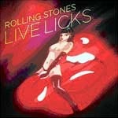
- A Bigger Bang: 2005 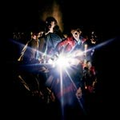
- Forty Licks: 2002 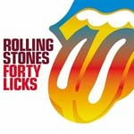
- No Security: 1998 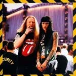
- Bridges to Babylon: 1997 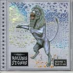
- Rock & Roll Circus: 1996 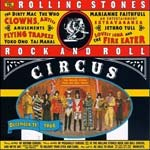
- Stripped: 1995 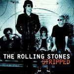
- Voodoo Loung: 1994 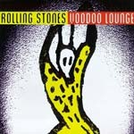
- Jump Back: 1993 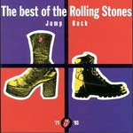
- Flashpoint: 1991 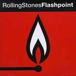
- The London Years: 1989 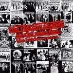
- Steel Wheels: 1989 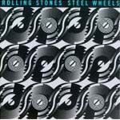
- Dirty Work: 1986 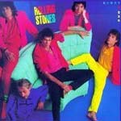
- Undercover: 1983 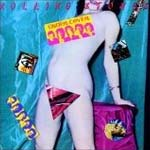
- Still Lifge: 1982 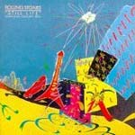
- Tatto You: 1981 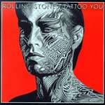
- Emotional Rescue: 1980 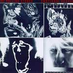
- Some Girls: 1978 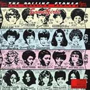
- Love You Live: 1977 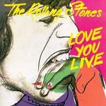
- Black and Blue:1976 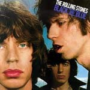
- It's Only Rock'n Rol: 1974 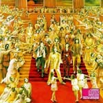
- Goats Head Soup:1973 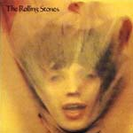
- Big Hits and Fazed Cookies:1972 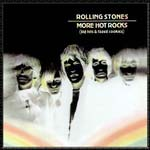
- Exile on Main Street: 1972 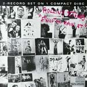
- Sticky Fingers: 1971 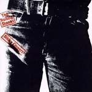
- Get Yer Ya Ya's Out: 1970 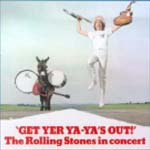
- Let It Bleed: 1969 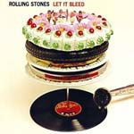
- Beggars Banquet: 1968 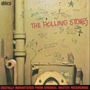
- Between the buttons: 1967 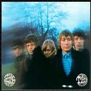
- Flowers: 1967 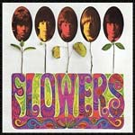
- Their Satanic Majesties Request: 1967 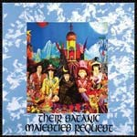
- Aftermath:1966 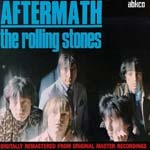
- Rolling Stones Now:1965 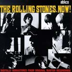
- December's Childrem:1965 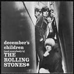
- Out of Our Heads: 1965 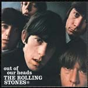
- Got Live if You Want It: 1965 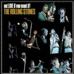
- 12 x 5:1964 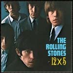